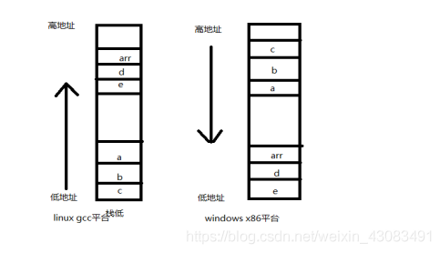

%3b' data-evernote-id='2018' class='js-evernote-checked'%3e%3c/path%3e %3c/svg%3e)
1.1背景
以前搞C++的时候，由于没有搞过什么底层逻辑，虽然对堆栈有所了解，但仍停留在表面。今天通过探索下堆栈的生长方向。
**栈：**由编译器在需要的时候分配，在不需要的时候自动清除的变量存储区。里面通常是局部变量，函数参数等。
**堆：**由new分配的内存块，他们的释放编译器不去管，由我们的应用程序去控制，一般一个new对应一个delete。如果程序员没有释放掉，那么在程序结束后，操作系统会自动回收。
**自由存储区：**由malloc等分配的内存块，和堆十分相似，不过它使用free来结束自己的生命。
**全局/静态存储区：**全局变量和静态变量被分配到同一块内存中，在以前的c语言中。全局变量又分为初始化的和未初始化的，在c++里面没有这个区分了，他们共同占用同一块内存。
查了些资料，有说向上生长，也说向下生长。
另外关于函数参数压栈，也有描述从右往左压栈，这些方向性的描述是什么意思？
1.2代码实例
#include <stdio.h>
#include <string.h>
void test_example(int a,int b,int c)
{
int arr[2] = {1,2};
int d = 0;
int e = 0;
printf("a:%d a_ptr: %p, b: %d b_ptr: %p, c: %d c_ptr: %p \n",a,&a,b,&b,c,&c);
printf("d: %d d_ptr:%p , e: %d, e_ptr: %p \n",d,&d,e,&e);
printf("arr: %p \n",arr);
memcpy(&e,arr,sizeof(arr));
printf("c: %d c_ptr: %p, d: %d e: %d ",c,&c,d,e);
}
int main()
{
int a = 3;
int b = 4;
int c = 5;
printf("Hello World \n");
test_example(a,b,c);
return 0;
}
- 1
- 2
- 3
- 4
- 5
- 6
- 7
- 8
- 9
- 10
- 11
- 12
- 13
- 14
- 15
- 16
- 17
- 18
- 19
- 20
- 21
- 22
- 23
- 24
- 25
代码中，很容易发现memcpy copy越界，e只有4bytes，被写越界4个字节。
我们不在这里讨论为什么写越界的问题。你知道写穿的这4个字节影响性吗？或者说覆盖了谁吗？
我们先看下linux操作系统下，gcc编译后运行结果：
可以看到d = 2，栈中d这块内存被覆盖了，证明在栈中d位于高地址，e位于低地址，实际打印也如下图所示。
同样一块代码，在windons系统下运行，如图：
函数参数和局部变量在内存中的位置如上图。

1.3总结
到这我们一直没有解释上下箭头是什么意思。
- 1、内存没有方向的概念，只有高低的区别。
- 2、如果压栈的顺序是从低地址往高低地址依次压栈，则是向上生长。
高地址往低地址依次压栈，则是向下生长。
这里其实有个潜台词，要先确定栈底位置，比如linux，一块栈内存，栈底位于低地址，所以压栈是从低地址往上增长。windows，栈底则位于高地址。 - 3、关于函数参数，从右往左压栈没有问题，比如我们例子中的c–>b–>a从栈低依次压栈。
- 4、关于局部变量，其实也有规律，linux平台是先定义，后入栈。Windows，则是先定义，先入栈。
有了如上认识，我们就可以，当遇到踩内存踩了谁的问题时候，就有了初步分析。
栈的生长方向不同平台不一样，以及一些书籍也是基于某一个平台给出的描述，不能说是错，试着了解下你工作中的栈呢。